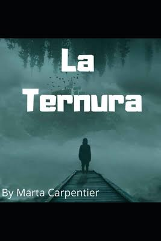

Ciencia-Ficción
¿Qué es?
- Es un género cuyos contenidos se encuentran basados en supuestos logros científicos o técnicos que podrían lograrse en el futuro.
Diferencia al género fantastico: - Este sustento científico hace que la ciencia ficción se diferencie del género fantástico, donde las situaciones y los personajes son fruto de la imaginación.
Sus caracteristicas dependen de sus temáticas, las cuales pueden ser:
- Viajes al espacio.
- Conquista espacial.
- Consecuencias de una hecatombe.
- Apocalipsis nuclear.
- Mutaciones.
- Evolución de los robots.
- Realidad virtual.
- Civilizaciones alienigenas, distoís y utopís.

Autores y libros de Ciencia Ficción:
La Maquina del tiempo- Herbert George Wells (1895)1984- George Orwell (1949)Fahrenheit 451- Ray Bradbury (1953)Soy leyenda- Richard Matheson (1954)El fin de la ternidad- Isaac AsimovLas estrellas, mi destino- Alfred Bester (1956)Solaris- Stanislaw Lem (1961)Dune- Frank Herbert (1965)Ubik- Philip K. Dick (1969)


Romance
¿Qué es?
- Relato extenso de ficción
- Normalmente escrito en prosa.
Diferencia de la novela moderna: - Presenta un mundo imaginario en el que los personajes, así como sus situaciones pertenecen a la esfera de lo maravilloso y lo insólito.
Autores y libros de Romance:
Don Quijote de la mancha- Miguel de Cervantes (1605)Cancionero general- Hernando del Castillo (1511)Cantar- Mio Cid (1968)El cantar de los nibelungos (1814)Roman de la Rose- Guillaume de Lorris (1735)Poema de Troya- Benoit de Sainte-Maure (1987)Libro del Caballero Zifar- Ferrand Martinez (1983)


Terror
¿Qué es?
- Género de ficción literario.
Pretende o tiene capacidad de: - Asustar
- Causar miedo
- Aterrorizar a los lectores o espectadores
- Inducir sentimientos de:
- Horror
- Terror
- Repulsión
- Aversión
- Terror Sobrenatural
- Terror no sobrenatural
- Puede interpretarse como una metáfora de los grandes temores de la sociedad.
Novela

- La ternura
-

Marta Carpentier, nueva escritora española, con este relato pleno de fantasía y sensibilidad quedó en el segundo lugar del gusto de los lectores de todo el mundo en los Premios Literarios Freeditorial 2017.
La Ternura es un viaje al centro de nuestras emociones más hirientes, las que nos golpean convirtiéndonos en lo que somos. No es sino un gigante y crudo retrato sobre el poder de la entrega, la pérdida y de cómo nuestros deseos nos afectan hasta el punto de transformarnos por completo. En otras palabras, un certero y afilado dibujo del corazón humano, tan lleno siempre de miedos pero también de esperanzas.
Área Matemática:
En está área encontrarás libros que te ayudarán a entrar un poco más al mundo de las matemáticas
Diccionario Ilustrado de conceptos Matemáticos -Efrain Soto ApolinarLa enseñansa de las matemás y la tecnología- Ramón Sebastián Salat FigolsDeambular Juegos Bipersonales Libroedo Reales Infinito Teoremas fundamentales Variables
Área Tecnologíca:
A continuación se te presentan una serie de videos y libros que pueden reforzar tus competencias profesionales tecnológicas, tomando en cuenta los diversos módulos y submódulos a lo largo de la carrera Técnico en Informática.
RECUERDA UTILIZAR LA INFORMACIÓN PARA USOS ÉTICOS
- Distribución de Software Libre GNLinux
- Introducción General:
- Introducción a la Virtualización
Introducción a la virtualización con Oracle VirtualBox Descarga de Debian y VirtualBox Instalación de VirtualBox Configuración de un archivo .iso en Oracle VirtualBox Solución de Errores en VirtualBox - Instalación de Debian
- Desktop de Debian:
- La consola o terminal de linux:
La consola o terminal de Debian El comando cd, rutas relativas y absolutas en Linux Introducción a los Ficheros de Linux El interprete de Comandos Tipos de Comandos Sintaxis de Comandos Trabajar con Directorios Permisos y Privilegios en Linux Gestor de Paquetes en Linux Debian Configuración de Proxy Sources-list-debian (Material txt de apoyo) Navegadores web en Consola para Linux elinks-manual Crear usuarios a través de comandos en Linux Debian Test de Autoevaluaciín (Parte de autoreforzamiento) - Editores de Texto en Linux: